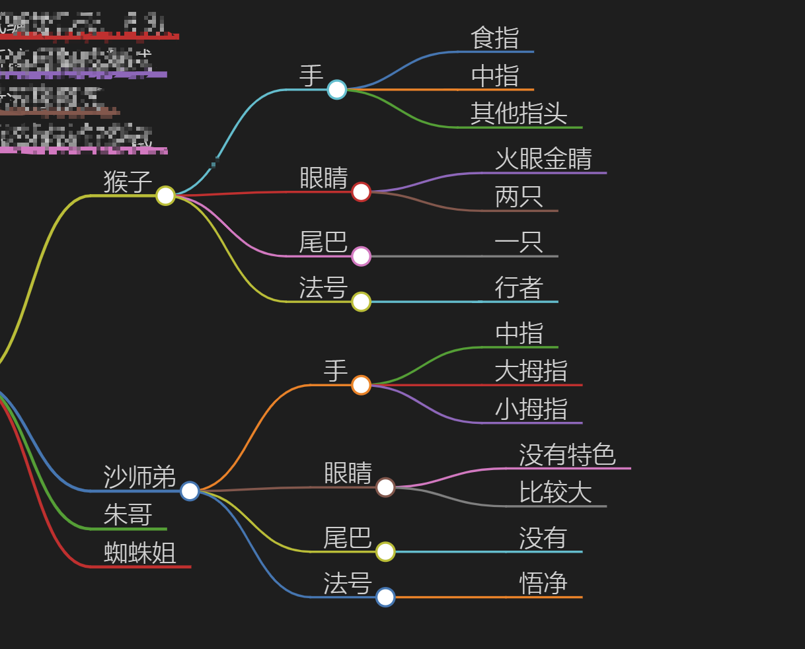
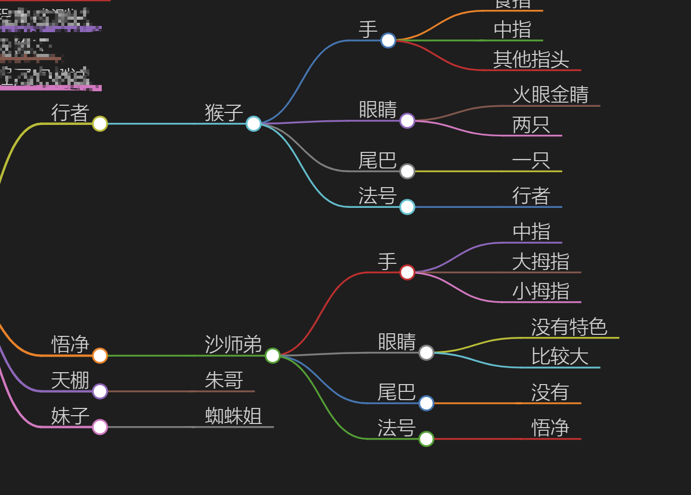

前情提要
在 文件哈希比较的代码优化一例 中，对于提高PowerShell的执行效率，我分享了几个比较有用的优化代码方法
- 用foreach替换管道，可以提升50%效率
- 不要反复计算相同的变量，需要在循环之外计算
- 字符串比较会比对象比较更快
本次带来的故事也是基于基于查询的加速，效率提升同样让人满意。
故事
现在有一个对象，如下所示。这种对象非常简单，只有名字。
如果我们想要找到特定的人物名称，这非常简单。因为只有一层关系，这种查询没什么可以优化的。
1
$西游记人物 -match "猴哥"
事实上生产当中，我们面临的情况可能是这样的，面临的对象属性众多，真正要比对的属性，也往往不在第一位

比如我们的目标是，查找法号为行者的角色，展示其名字
1
$西游记人物 |?{$_.法号 -eq "行者"}
这种查询方式即使改成foreach，查询起来也不会太快。下面这个真实的例子，这种查询大概需要270ms。
1
2
$文件列表=ls C:\windows\System32 -Recurse -ErrorAction SilentlyContinue
measure-command {$文件列表|? {$_.fullname -eq "C:\windows\System32\AdvancedInstallers"} }
优化1-常规优化
试试改成if-else ，同样的事情，大概170ms
1
2
3
measure-command {$文件列表|%{if ($_.fullname -eq "C:\windows\System32\AdvancedInstallers")
{return $_} }
}
复习一下上一篇学过的foreach，变成了60ms
1
2
3
4
5
6
7
8
9
measure-command {
foreach ($文件 in $文件列表)
{
if ($文件.fullname -eq "C:\windows\System32\AdvancedInstallers")
{ $文件
}
}
}
以上也是最常用的返回方式，return返回，或者不输入return，直接返回。
两者有少许差异，return不会执行后续操作，具体适用场景可以自行测试。
优化2 控制返回-Break
和上面的例子类似，这里仅仅在if的循环里面加入了一个break，速度直接达到了2ms
1
2
3
4
5
6
7
8
9
measure-command {
foreach ($文件 in $文件列表)
{
if ($文件.fullname -eq "C:\windows\System32\AdvancedInstallers")
{ $文件
break
}
}
}
看起来简直超神了，但是这个优化之所以速度这么快，是有前提的。在完成一次正确匹配后，break会直接终止掉循环，所以如果你要查询的数据在数组的前面，那返回就会异常快；在最后面，则速度会逐渐接近最大值。但是不管怎么说，如果要查的结果只有一条，不会有重复的，那么用break是没有负担，但是收益巨大的。
语句
break可以包含允许退出嵌入循环的标签。 标签可以在脚本中指定任何循环关键字，如foreachfor、while
优化3-大杀器哈希表
break属于写起来简单，用起来好用的方法。但如果说我们需要在一个脚本中频繁的查询一些数据，并提取相应数据，应该怎么做呢？
还是上面西游记的例子，无论怎么优化，还都是属于常规范围，查询速度有快有慢。
1
$西游记人物 |?{$_.法号 -eq "行者"}
但是如果我们把对象重新构造一下，变成这个样子呢？
我们要查看行者，只需要访问$西游记.行者即可。这种查询

构造一个比较现实的例子，我们将原来的对象，增加了一列表头，也就是fullname,构造这个对象额外花费了250ms。根据实际情况，这里也可以使用某种唯一ID。
1
2
3
4
5
6
measure-command {
$新文件列表= $文件列表|%{@{
$_.fullname=$_
}
}
}
接下来我们用点分表示法来使用这条数据，看看查询数据看看需要多久。
我们查一个数组最近的，一个数组最远的，耗时均在20ms左右。
1
2
measure-command {$新文件列表."C:\windows\System32\0409"}
measure-command {$新文件列表."C:\windows\System32\zh-TW\WWAHost.exe.mui"}
哈希表为什么快
这么快其实很简单，可以看看兄弟行业SQL的索引。技术都是触类旁通的。索引的优点和缺点同样明显，所以哈希表的优点和缺点也是一样明显。
总结
break返回能够尽力的快速返回，速度有快有慢，但是实现简单。
哈希表速度稳定也很快，不过需要额外的时间构造哈希表。所以只适用于频繁查询的场景。
实际做过一个例子，在极限情况下，使用哈希表可以将一个需要15分钟执行完毕的脚本，提速到了只需30秒。
if-else比match快，相信很多人会感到奇怪，但是确实如此。
备考
文中的例子当然属于伪命题，PowerShell有一些原生的命令，可以直接原生查询，而不用像例子这么复杂。
此处仅仅只是为了演示效果。生产中总会遇到各种生成的查询对象，无法用原生命令一次性查找获得，本文所面对的情况正是如此。
下一次分享，应该会基于戴尔服务器的IPMI与裸金属部署中介绍的多线程，更加详细的说明一些用法。